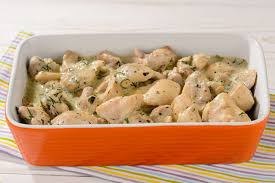
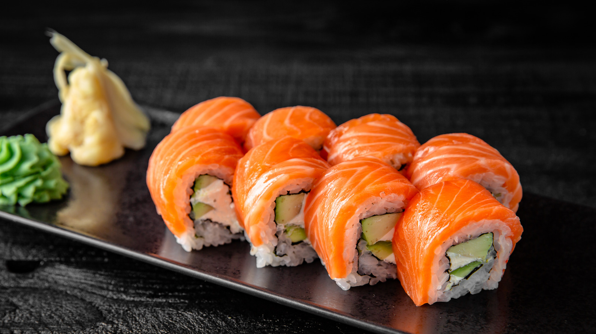
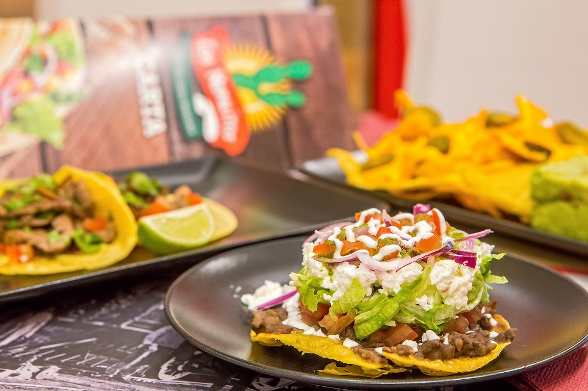

En este apartado te muestro mis comidas favoritas
Empezamos con mi top 5 de comidas favoritas con sus respectivas recetas.
1. Pollo en Salsa blanca
Esta es mi principal comida favorita, me gusta mucho el sabor de esta comida. A continuacion tienes la receta.
2. Sushi
El Philadelphia Roll es mi favorito. Mira como se hace.
3. Lomito Suizo

Esta comida me encanta. Mira la receta.
4. Sopa de Soya

La sopa de Soya es una comida coreana, mira que facil se hace.
5. Chalupas
Las chalupas son de mis favoritas, yo en lo personal tengo una receta personal pero aqui tienes una muy similar.